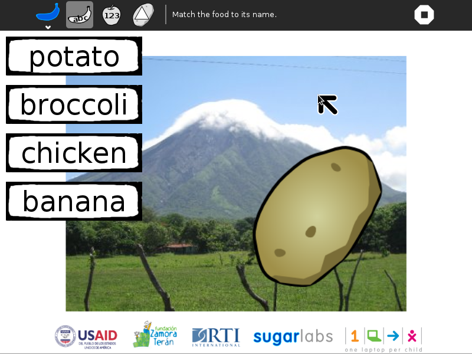
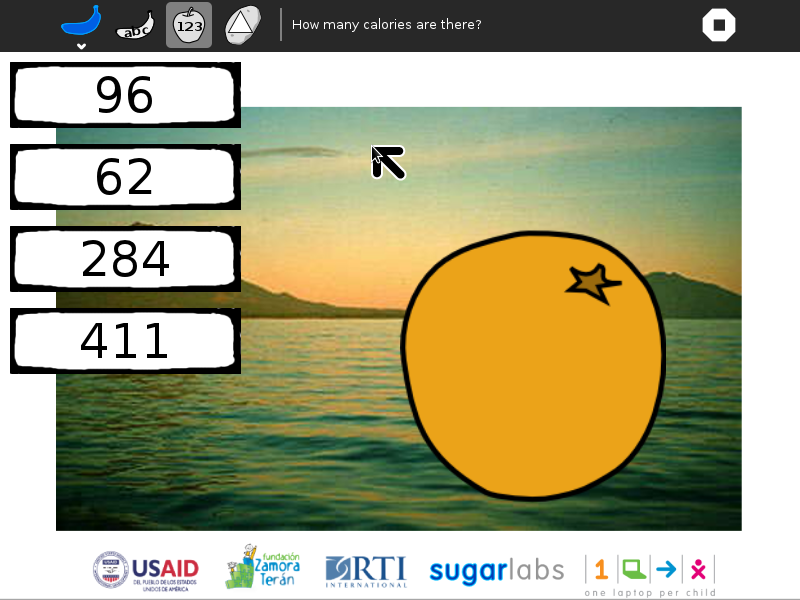
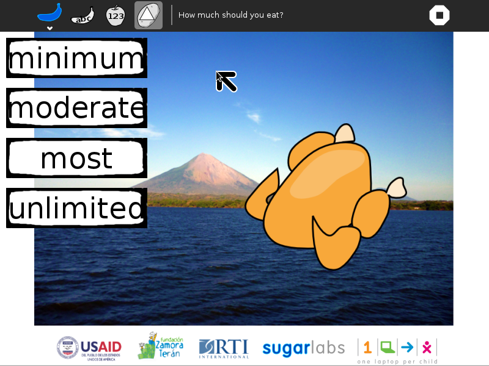
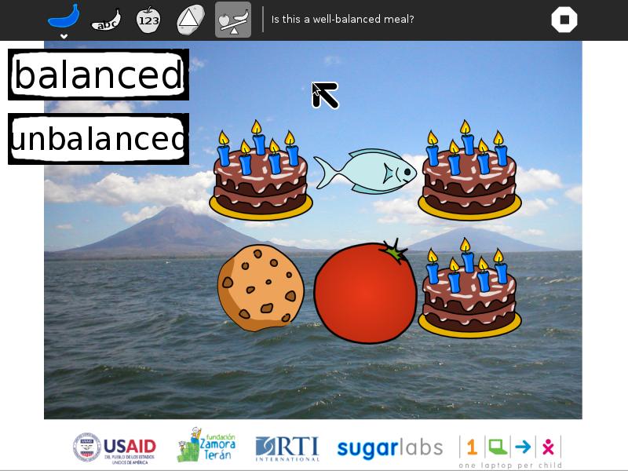
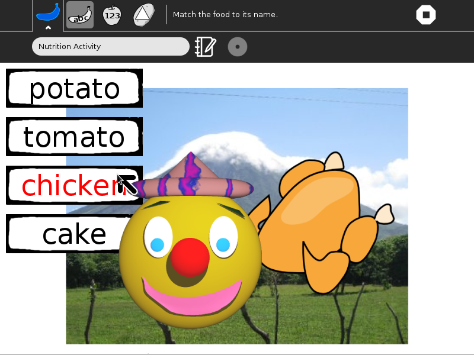
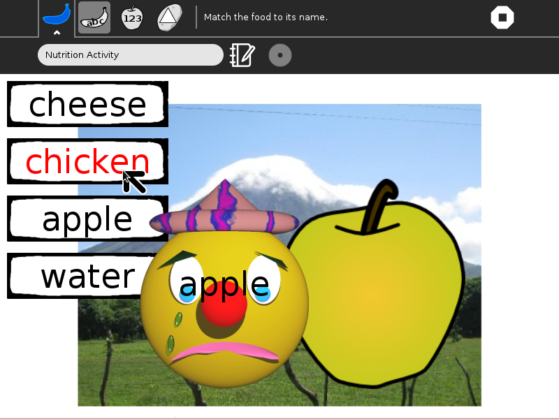
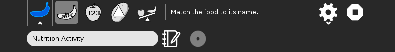
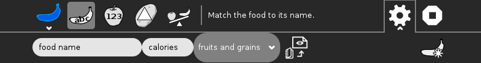

Nutrition¶
About Nutrition¶
A series of four nutrition games: Name That Food; How Many Calories?; How Much to Eat?; and Is This a Balanced Meal?

Where to get Nutrition¶
The Nutrition activity is available for download from the Sugar Activity Library: Nutrition
The source code is available on GitHub.
Using Nutrition¶
Name That Food¶

In the Name That Food game, a picture of a food is shown; four different names are shown as well, only one of which is correct. Click on the correct name and a smiley face will appear, along with the number of calories in that food. Click on the incorrect name, and a frowny face will appear, along with the correct answer.
How Many Calories?¶


In the How Many Calories? game, again, a picture of a food is shown. Now the goal is to identify how many calories are in the food.
How Much to Eat?¶


In the How Much to Eat? game, the goal is to identify how little or much of the shown food should be consumed per day. Relative quantities are based on the Food Pyramid: a few sweets, a modest amount of meat and dairy, more grains and fruit.
Is This a Balanced Meal?¶


In the Is This a Balanced Meal? game, six food items are shown. The goal is to determine if they constitute a well-balanced meal; e.g., not too many sweets or too much meat and dairy.
Did you know?¶
If you get the correct answer, a smiley face is shown.


If you get a wrong answer, the correct answer is shown on a frowny face.


The Toolbars¶

from left to right
- Activity-toolbar Button
(toolbar described below)
- Name-that-food Button
Launches a new Name That Food game
- How-many-calories Button
Launches a new How Many Calories? game
- How-much-should-I-eat Button
Launches a new How Much to Eat? game
- Is-this-a-balanced-meal Button
Launches a new Is This a Balanced Meal? game
- Custom-toolbar Button
Used to load custom food items (toolbar described below)
- Stop Button
used to exit the activity
Acitivity Toolbar
- Activity name field
used to change the name of the activity (The name is used by the save-to-PDF Button.)
- Share Button
disabled (Portfolio Activity does not support sharing)
- Reflection Button
used to write descriptions for the Journal entry of this instance of Portfolio

from left to right
- Name Entry field
Used to enter the name of a new food item
- Calories Entry field
Used to enter the calories of a new food item
- Food Pyramid Combobox
Used to select the level in the Food Pyramid for a new food item
- Image-load Button
Used to open a Chooser for selecting an image of a new food item from the Sugar Journal
Create-new Button Used to create a new food item
Learning with Nutrition¶
Each of the nutrition games presents a different learning opportunity.
- Name That Food
This game is about literacy, but also provides some nutritional information about the foods as they are presented.
- How Many Calories?
This game introduces the concept that different foods have different nutrition value. The focus here is on calories.
- How Much to Eat?
This game is based upon the Food Pyramid. It introduces the concept that not all foods should be consumed in equal quantities. E.g., high-sugar-content foods should be eaten in small quantities, while grains and fruits can be eaten in larger quantities.
- Is This a Balanced Meal?
This game is also based on Choose My Plate, a nutrition program that has recently replaced the Food Pyramid. It generates meals and asks if they are nutritionally balanced. More cookies and cake than fruit and grains?
Extending Nutrition¶
Have the children take pictures of the foods that they eat at home. Use the Nutrition acitvity to explore caloric intake and the degree to which they are eating a balanced meal.
Have the children find a food item not in the database and add it using the gear icon. They will need make a picture of the food (using Paint or Record) and look up the nutritional content of their food. (https://www.choosemyplate.gov/SuperTracker/foodapedia.aspx is a good resource.)
Modifying Nutrition¶
Add your own foods by adding images to the images directory and adding to the table in game.py
# ChooseMyPlate.gov
LEVELS = [_('minimum'), _('moderate'), _('more'), _('most'), _('unlimited')]
MYPLATE = [[_('sweets'), 0], [_('dairy'), 1], [_('fruits'), 2],
[_('meat'), 2], [_('grains'), 3], [_('vegetables'), 3],
[_('water'), 4]]
# Food name; calories; myplate category, image file name
FOOD = [[_('banana'), 105, 2, 'banana.png'],
[_('apple'), 72, 2, 'apple.png'],
[_('fish'), 58, 3, 'fish.png'],
[_('corn'), 96, 4, 'corn.png'],
[_('broccoli'), 55, 5, 'broccoli.png'],
[_('chicken'), 262, 3, 'chicken.png'],
[_('cheese'), 114, 1, 'cheese.png'],
[_('orange'), 62, 2, 'orange.png'],
[_('potato'), 159, 5, 'potato.png'],
[_('water'), 0, 6, 'water.png'],
[_('tomato'), 150, 5, 'tomato.png'],
[_('cookie'), 68, 0, 'cookie.png'],
[_('beef'), 284, 3, 'beef.png'],
[_('egg'), 77, 3, 'egg.png'],
[_('sweetpotato'), 169, 5, 'sweetpotato.png'],
[_('tamale'), 126, 5, 'nacatamal.png'],
[_('bread'), 69, 4, 'bread.png'],
[_('rice and beans'), 411, 4, 'rice-and-beans.png'],
[_('cake'), 387, 0, 'cake.png']]
Your suggestions for enhancements and/or use cases…
Where to report problems¶
You can report bugs and make feature requests at nutrition/issues
You are also welcome to leave comments/suggestions.
Credits¶
Nutrition was written and is maintained by Walter. He was assisted by Claudia Urrea and Felix Garrido of Fundación Zamora Terán.
The smiley and frowny face and birthday cake artwork comes from the GCompris suite.